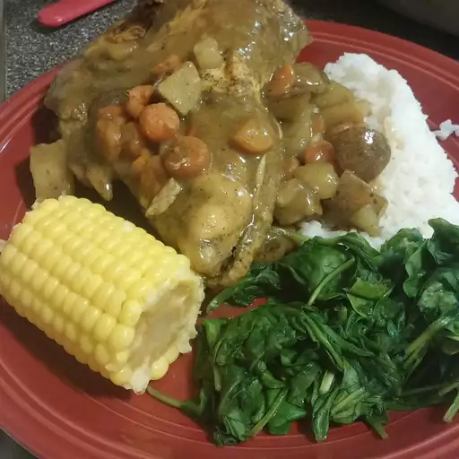

Curried Chicken

Description
I couldn't find a recipe I liked, so here is my family's version of
'curried' chicken. It brings back memories of a childhood spent
enjoying food there, where there were very few dishes I wouldn't eat,
vegetables or not. This dish is traditionally served on white rice or
in a roti, but feel free to get creative!
Ingredients
- ¼ cup curry powder, divided
- 2 tablespoons garlic powder
- 1 tablespoon seasoned salt
- 1 tablespoon onion powder
- 2 teaspoons salt
- 1 sprig fresh thyme, leaves stripped
- salt and ground black pepper to taste
- 2 ¼ pounds whole chicken, cut into pieces
- 3 tablespoons vegetable oil
- 3 cups water
- 1 potato, diced
- ½ cup chopped carrots
- 2 scallions (green onions), chopped
- 1 (1 inch) piece fresh ginger root, minced
- 1 Scotch bonnet chile pepper, chopped, or to taste
Steps
- Whisk 2 tablespoons curry powder, garlic powder,
seasoned salt, onion powder, salt, thyme leaves, allspice,
salt, and pepper together in a bowl. Add chicken and coat
with curry mixture until curry mixture is wet and sticks
to chicken.
- Heat oil and 2 tablespoons curry powder in a large cast-iron
skillet over high heat until oil is hot and curry powder changes
color, 2 to 3 minutes. Add chicken to the hot oil mixture and
reduce heat to medium. Add water, potato, carrots, scallions, ginger,
and chile pepper to skillet.
- Cover skillet and simmer until chicken is no longer pink in the center
and gravy is thickened, allowing chicken to cook undisturbed for last
15 minutes of cooking, 30 to 40 minutes. An instant-read thermometer
inserted into the thickest part of the thigh, near the bone, should read
165 degrees F (74 degrees C). Remove chicken to a serving dish; continue
simmering gravy, uncovered, to thicken (if needed). Serve chicken with
gravy.